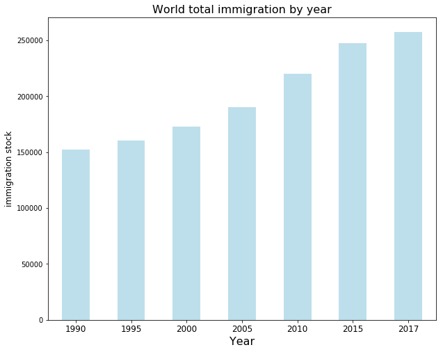

Overview of the world immigration

The bar plot shows the world total immigration increase steadily.


From the map plots, we can see the immigration distribution does not change a lot, compared with the year 1990 and 2017. North America, Europe, the Middle East, and Australia are the top destinations during these 30 years.

This area graph shows the world immigrant distribution by age, it is not surprising that middle age immigration is the largest part. It's worth noting that the increase in immigrants aged over 70. This is because of the tendency to return to countries of origin after retiring.